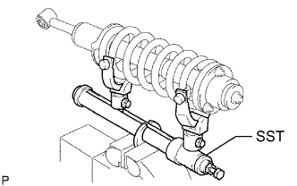
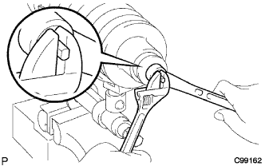
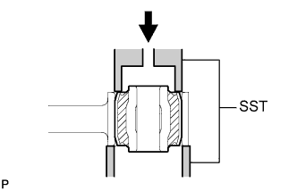

ПЕРЕДНИЙ АМОРТИЗАТОР > РАЗБОРКА |
| 1. ОТВЕРНИТЕ ГАЙКУ КРЕПЛЕНИЯ ПЕРЕДНЕЙ ОПОРЫ К ПЕРЕДНЕМУ АМОРТИЗАТОРУ |
|  |
С помощью SST сожмите цилиндрическую винтовую пружину.
|  |
Отверните гайку крепления передней опоры к переднему амортизатору.
| 2. СНИМИТЕ ЛЕВУЮ ОПОРУ ПЕРЕДНЕЙ ПОДВЕСКИ В СБОРЕ |
Снимите опору подвески, подушку и 2 держателя со штока амортизатора.
| 3. СНИМИТЕ ПЕРЕДНЮЮ ЛЕВУЮ ЦИЛИНДРИЧЕСКУЮ ВИНТОВУЮ ПРУЖИНУ |
Снимите цилиндрическую винтовую пружину с амортизатора.
| 4. СНИМИТЕ ВТУЛКУ ПЕРЕДНЕГО АМОРТИЗАТОРА |
|  |
С помощью SST и пресса снимите втулку амортизатора.